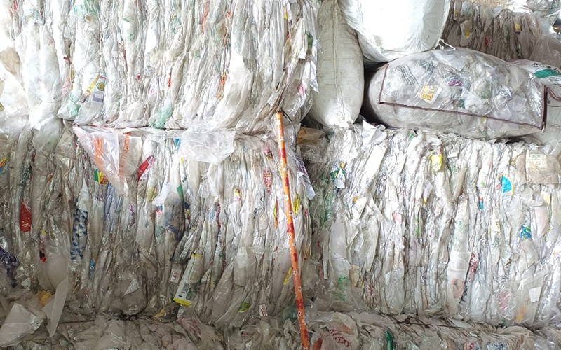

Segments :
- Plastic
- E Waste
- Battery
- Used Oil
- Tires
Services we Offer :
- Registration ( State & Central Control Board)
- Annual report filing.
- Complete portal management.
- Consultancy services.
- Credit transfer for compliance fulfillment.
Sampurnearth takes pride in our commitment to Extended Producer
Responsibility (EPR) as one of the first PROs in India. We collaborate
with producers, brands and manufactures to manage the entire life
cycle of their products responsibly. We are present all over India and
we offer transparent and diligent reporting to our customers. By
integrating EPR practices, we contribute to sustainable resource
management, ensuring that products are recycled and disposed of
responsibly.
The Need for Extended Producer Responsibility (EPR) in India
In the context of India's burgeoning population and rapid industrial
growth, the management of waste, particularly plastic waste, has
become a critical environmental issue. Extended Producer
Responsibility (EPR) is a policy approach designed to address this
challenge by holding producers accountable for the entire lifecycle of
their products, especially their post-consumer phase. Implemented
under the Plastic Waste Management Rules, 2016, and subsequent
amendments, EPR mandates that producers, importers, and brand owners
take responsibility for the collection, recycling, and disposal of
their products.
Benefits of Adopting Extended Producer Responsibility
-
Environmental Protection :
EPR helps in reducing the environmental impact of products by ensuring proper waste management and recycling, thus preventing pollution and conserving natural resources.
-
Resource Efficiency:
By promoting the recycling of materials, EPR reduces the need for virgin resources, thereby conserving raw materials and energy.
-
Regulatory Compliance:
By promoting the recycling of materials, EPR reduces the need for virgin resources, thereby conserving raw materials and energy.
-
Economic Advantages:
Implementing EPR can lead to cost savings in the long term by reducing raw material expenses and creating opportunities for new business ventures in the recycling sector.
-
Corporate Social Responsibility (CSR):
Businesses that adopt EPR demonstrate a commitment to sustainability, improving their brand image and customer loyalty.
Urging Indian Businesses to Adopt EPR
We strongly encourage Indian businesses and industries to integrate
EPR into their operational strategies. This not only ensures
compliance with national regulations but also positions your business
as a leader in environmental stewardship. By embracing EPR, companies
can contribute significantly to waste reduction, resource
conservation, and the overall well-being of the environment.

Our Competence as an Authorized Recycler
As an authorized recycler, we are equipped to support businesses in
fulfilling their EPR obligations efficiently and effectively. Our
state-of-the-art recycling facilities ensure that waste materials are
processed and recycled to the highest standards. We offer
comprehensive recycling services that include collection, segregation,
processing, and the provision of recycling credits.
Our recycling credits are designed to help businesses demonstrate compliance with EPR regulations. These credits certify that a specific amount of waste has been properly recycled, aiding companies in meeting their legal and environmental commitments. Partnering with us not only helps you fulfill your EPR requirements but also ensures that you receive high-quality recycling services backed by our extensive expertise and dedication to sustainability.
Our recycling credits are designed to help businesses demonstrate compliance with EPR regulations. These credits certify that a specific amount of waste has been properly recycled, aiding companies in meeting their legal and environmental commitments. Partnering with us not only helps you fulfill your EPR requirements but also ensures that you receive high-quality recycling services backed by our extensive expertise and dedication to sustainability.